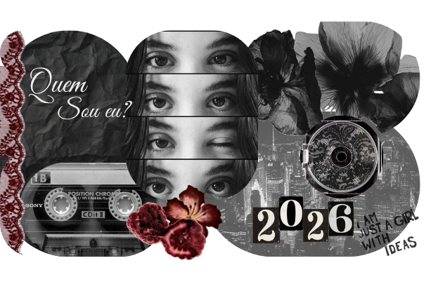
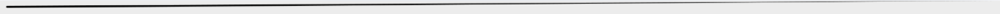
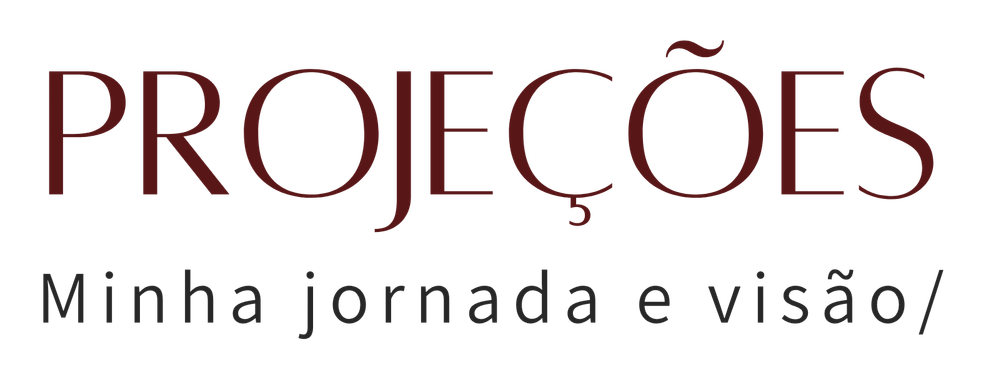
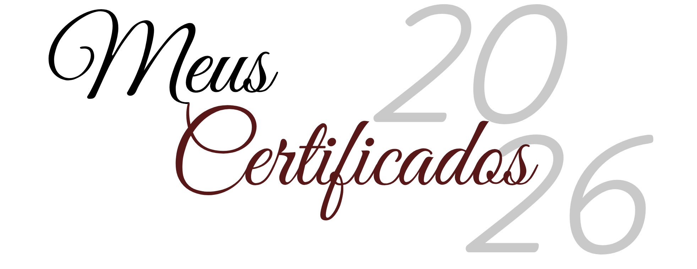

Meu nome é Carolina Jung , sou brasileira e natural de Porto Alegre, capital do estado RS. Vivi grande parte da minha vida em Brasília e atualmente moro em Florianópolis. Tenho 17 anos e curso o terceiro ano do Ensino Médio Integrado ao curso técnico de Análise e Desenvolvimento de Sistemas na escola Sesi da rede Senai. Pretendo cursar a faculdade de Design de Moda e realizar uma especialização relacionada à área em questão. Meu objetivo é conseguir um amplo repertório durante o ensino médio e construir um networking sólido. Atualmente almejo exercer um cargo de relevância dentro de uma marca inovadora no meu futurmo profissional.
Meus objetivos e personalidade

Disciplinas escolares (Ensino Médio)
Disciplinas do técnico de Análise e Desenvolvimento de Sistemas
Documentos de reconhecimento e participação
/ Sobre mim

Para o fechamento de 2026, pretendo concluir o Ensino Médio e me certificar no curso técnico de Análise e Desenvolvimento de Sistemas. Minhas principais intenções a médio prazo são a ingressão na faculdade de Design de Moda na UDESC e iniciar minha jornada profissional, de preferência, na minha área em questão. A longo prazo, almejo exercer um cargo de relevância e evoluir profissionalmente sempre que possível.
Além disso, busco crescer pessoalmente, desenvolvendo autonomia, comunicação e disciplina.
/ Minha rotina

/ Disciplinas E.M
/ Projetos e aulas extras
/ Análise e Desenvolvimento de Sistemas
